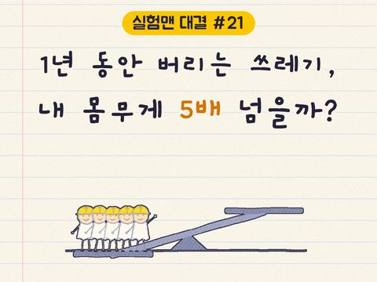
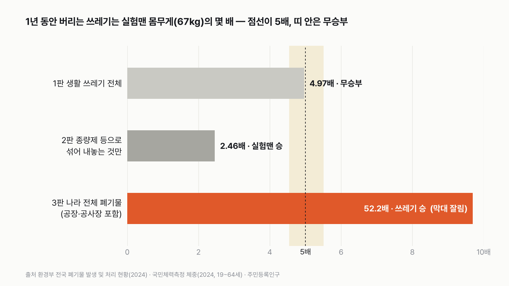
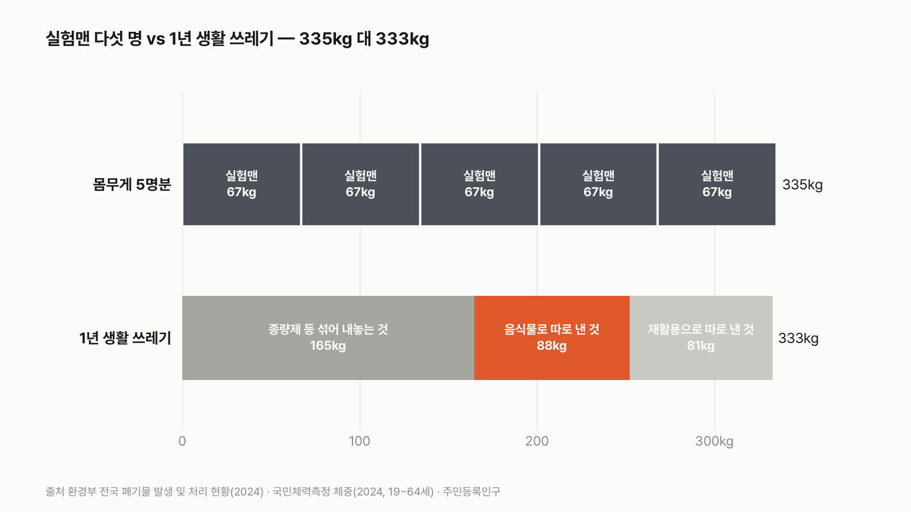
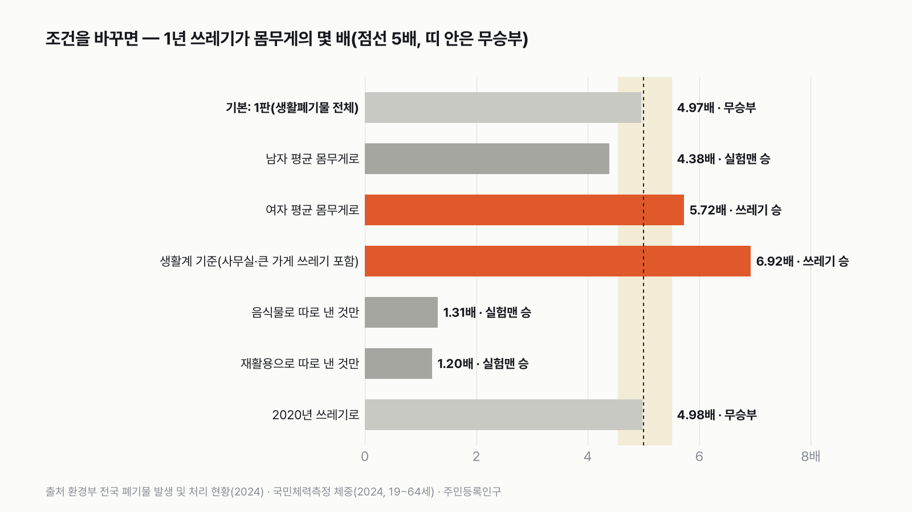
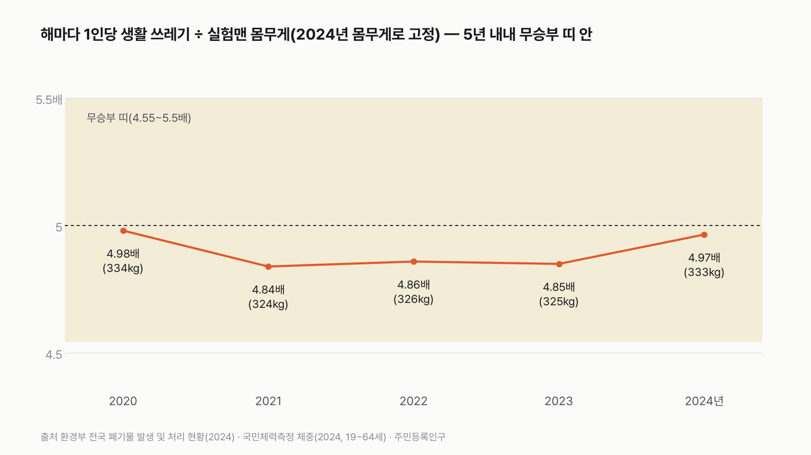

실험맨이 1년 동안 버리는 쓰레기, 자기 몸무게의 5배를 넘을까
매일 버리는 봉투 하나는 가볍지만, 1년을 모으면 꽤 무거워요. 5배를 넘을지 먼저 골라 주세요.

독자 투표
실험맨(평균 한국인)이 1년 동안 버리는 생활 쓰레기, 자기 몸무게의 5배를 넘을까?
3줄 요약
- 평균 한국인 '실험맨'이 1년 동안 버리는 쓰레기를 모아 저울에 올려요. 맞은편에는 실험맨 다섯 명이 올라가요.
- 하루에 버리는 쓰레기는 1kg도 안 돼요. 그런데 1년을 모으면 실험맨 다섯 명과 비슷해져요.
- 생활 쓰레기 전체, 종량제 봉투 쪽만, 나라 전체 폐기물까지 세 판으로 겨뤘어요. 투표하면 결과가 바로 아래에 열려요.
조건과 규칙
- 실험맨은 평균 한국인이에요. 국민체력측정에서 잰 19~64세 남녀 나이대별 평균 몸무게를 모아 실험맨 몸무게로 써요.
- 쓰레기는 환경부가 해마다 집계하는 전국 폐기물 발생량(2024년)을 주민등록인구로 나눠 한 사람이 1년에 내놓는 양으로 써요.
- 1판은 생활 쓰레기 전체, 2판은 종량제 봉투 등으로 섞어 내놓는 것만, 3판은 공장과 공사장 폐기물까지 넣은 나라 전체 폐기물이에요.
- 쓰레기가 몸무게의 5배를 넘는지 겨뤄요. 5배의 1.1배 안쪽(4.55~5.5배)이면 비긴 것으로 쳐요.
결과 요약
3판 1승 1무 1패 → 최종 무승부
- 실험맨 몸무게는 67.0kg, 1년 생활 쓰레기는 332.8kg이에요. 4.97배라서 5배에 거의 딱 붙어 비겨요.
- 종량제 봉투 쪽만 세면 164.6kg, 2.46배로 실험맨이 이겨요. 공장과 공사장 폐기물까지 넣으면 3,502kg, 52배로 쓰레기가 압승해요.
- 1판은 몸무게에 아주 예민해요. 남자 평균(75.9kg)이면 4.38배로 5배를 못 넘고, 여자 평균(58.1kg)이면 5.72배로 넘어요. 공식 1인당 지표(사무실·큰 가게 포함)로 세면 6.92배로 쓰레기가 이겨요.
그래서? 실험맨 다섯 명은 335kg, 1년 생활 쓰레기는 333kg이에요. 하루 0.912kg을 버리는데, 딱 5배가 되려면 하루 0.918kg이어야 해요. 하루 약 6g 차이예요.
독자 예상 vs 데이터 결과
실험맨(평균 한국인)이 1년 동안 버리는 생활 쓰레기, 자기 몸무게의 5배를 넘을까?
데이터 결과: 무승부. 1년 생활 쓰레기 332.8kg, 실험맨 67.0kg의 4.97배예요. 5배에 거의 딱 붙어 비겨요. 종량제 쪽만이면 2.46배, 나라 전체 폐기물이면 52배예요.


숫자 두 개로 줄이면 이래요. 실험맨은 하루에 쓰레기 0.912kg을 내놓아요. 그래서 73일이면 자기 몸무게만큼 버려요. 1년이면 몸무게의 4.97배예요.
| 판 | 1인당 1년 쓰레기 | 실험맨 몸무게 | 배수 | 승자 |
|---|---|---|---|---|
| 1판 생활 쓰레기 전체 | 332.8kg | 67.0kg | 4.97배 | 무승부 |
| 2판 종량제 등으로 섞어 내놓는 것만 | 164.6kg | 67.0kg | 2.46배 | 실험맨(5배 못 넘음) |
| 3판 나라 전체 폐기물(공장·공사장 포함) | 3,501.5kg | 67.0kg | 52.24배 | 쓰레기(5배 넘음) |
| 최종 | 1승 1무 1패 → 무승부 |
판마다 배수를 5배로 나눠서 1.1배 이상 크면 쓰레기 승, 1.1배 이상 작으면 실험맨 승, 그 사이면 무승부로 쳤어요. 이 규칙이면 최종 판정은 무승부예요. 질문의 본판인 1판이 5배에 거의 딱 붙었고, 좁게 센 2판과 넓게 센 3판이 한 판씩 나눠 가졌어요.
1판 생활 쓰레기 전체: 무승부(4.97배)
집과 작은 가게에서 나오는 생활 쓰레기는 2024년 한 해 1,704만 5,141톤이에요. 주민등록인구 5,121만 7,221명으로 나누면 한 사람이 1년에 332.8kg, 하루에 0.912kg을 내놓아요. 실험맨 몸무게 67.0kg의 4.97배예요. 5배와의 차이는 1%도 안 돼요(0.7%). 다섯 명이 저울에 올라가면 335.1kg이라, 쓰레기 쪽이 2.3kg 가벼워요. 우유 두 팩 남짓한 차이로 5배를 못 넘었지만, 규칙으로는 비긴 거예요.
2판 종량제 등으로 섞어 내놓는 것만: 실험맨 승(2.46배)
재활용으로 따로 내놓은 것과 음식물로 따로 내놓은 것을 빼고, 종량제 봉투 등으로 섞어 내놓는 쓰레기만 세면 한 사람이 1년에 164.6kg이에요. 생활 쓰레기의 절반 정도예요. 몸무게의 2.46배라 5배와는 거리가 멀어요. 우리가 '쓰레기 버린다'고 할 때 떠올리는 봉투만 따지면 실험맨이 넉넉하게 이겨요.
3판 나라 전체 폐기물: 쓰레기 승(52배)
공장에서 나오는 폐기물(1,635kg), 공사장에서 나오는 건설 폐기물(1,279kg), 사무실과 큰 가게에서 나오는 생활계 폐기물(131kg), 위험해서 따로 관리하는 지정 폐기물(123kg)까지 생활 쓰레기에 더해 인구로 나누면 한 사람에 1년 3,502kg이에요. 하루 9.6kg이에요. 몸무게의 52배라 일주일이면 자기 몸무게만큼 쌓여요. 이 판의 쓰레기는 실험맨이 직접 버린 것이 아니라, 실험맨이 쓰는 물건과 사는 건물을 만들면서 나온 폐기물이에요.


생활 쓰레기의 절반은 따로 내놓아요
1판의 332.8kg을 나눠 보면, 종량제 봉투 등으로 섞어 내놓는 것이 164.6kg, 음식물로 따로 내놓는 것이 87.6kg, 재활용으로 따로 내놓는 것이 80.6kg이에요. 음식물만 따로 세도 1년에 몸무게의 1.31배, 재활용만 따로 세도 1.20배예요. 음식물과 재활용을 합치면 종량제 쪽과 거의 같은 무게예요. 제가 놀란 건 음식물이 재활용보다 무겁다는 점이었어요.
몸무게가 바뀌면 승부가 갈려요
1판은 몸무게에 아주 예민해요. 남자 평균 75.9kg을 쓰면 4.38배로 '5배 못 넘는다'가 이기고, 여자 평균 58.1kg을 쓰면 5.72배로 '5배 넘는다'가 이겨요. 딱 5배가 되는 몸무게는 66.6kg이에요. 몸무게가 60.5kg보다 가벼우면 쓰레기가 이기고, 73.2kg보다 무거우면 실험맨이 이겨요. 그 사이는 모두 무승부예요.


쓰레기 기준을 넓히면 넘어요
환경부의 공식 1인당 지표는 생활 쓰레기에 사무실과 큰 가게에서 나오는 생활계 쓰레기를 더한 '생활계 폐기물'로 세요. 이 기준이면 한 사람이 1년 463.9kg, 하루 1.27kg이에요. 몸무게의 6.92배라 5배를 넉넉하게 넘어요. 질문이 '내가 집에서 버리는 것'인지 '내가 생활하면서 생기는 것'인지에 따라 답이 갈려요. 이 글은 계산 전에 1판을 집과 작은 가게에서 나오는 생활 쓰레기로 정했어요.
5년 내내 5배 언저리예요
2020년부터 2024년까지 해마다 같은 방식으로 세면 1인당 생활 쓰레기는 324~334kg 사이에 있어요. 몸무게를 2024년 값으로 고정하면 배수는 4.84~4.98배예요. 다섯 해 모두 무승부 띠 안이고, 한 번도 5배를 넘지 않았어요. 2021년에 조금 줄었다가 2024년에 다시 늘었어요.


하루로 바꾸면
1판에서 쓰레기가 딱 5배가 되려면 하루 0.918kg이어야 해요. 지금은 0.912kg이에요. 쓰레기가 확실하게 이기려면 하루 1.010kg을 넘어야 하고, 실험맨이 확실하게 이기려면 하루 0.835kg 아래로 줄여야 해요. 하루 77g을 줄이면 실험맨이 이기는 판이에요.
승부를 가른 건 하루 약 6g이었지만, 판을 넓히고 좁히자 2.5배에서 52배까지 벌어졌어요. 내 쓰레기는 어디까지일까요?
이 숫자는 어디서 왔나요
출처
기준일 쓰레기와 인구는 2024년, 몸무게는 2024년 측정값이에요. 모두 2026년 11월 8~9일에 KOSIS에서 받았어요. 조건은 2026년 11월 9일, 계산하기 전에 정했어요.
환경부전국 폐기물 발생 및 처리 현황
- 폐기물 발생량 및 처리현황_생활폐기물KOSIS DT_106N_29_2020005
1판·2판, 음식물·재활용, 2020~2024
- 사업장비배출시설계(생활계)·사업장배출시설계·건설폐기물KOSIS DT_106N_29_2020006
3판, 생활계 기준
- 사업장 지정폐기물 발생량 및 처리현황KOSIS DT_106N_29_2020014
3판
환경부 / 통계청 e-지방지표
- 주민 1인당 생활계폐기물배출량KOSIS DT_1YL21321
주민등록인구, 공식 1인당 값 대조
문화체육관광부·국민체육진흥공단국민체력측정통계
- 체중 변화: 성인 남자·여자KOSIS DT_113_STBL_1020278
실험맨 몸무게(2024)
어떻게 셌나요
- 쓰레기(측정): 환경부 「전국 폐기물 발생 및 처리 현황」 2024년 발생량(톤/년)이에요. 생활폐기물 합계와 그 안의 종량제방식 등 혼합배출, 재활용 가능자원 분리배출, 음식물류 폐기물 분리배출을 썼어요. 3판은 사업장비배출시설계(생활계), 사업장배출시설계, 건설, 사업장 지정폐기물 발생량을 더했어요.
- 인구(측정): 같은 환경부 지표에 쓰인 전국 주민등록인구 5,121만 7,221명(2024년)으로 나눴어요.
- 실험맨 몸무게(측정): 국민체력측정의 2024년 체중 평균, 19~64세 남녀 18개 묶음(남녀 × 9개 나이대) 평균의 평균이에요. 67.03kg이에요. 인구 수로 가중하지 않았어요.
- 한 사람이 버린 양(가정): 나라 전체 쓰레기를 인구로 나눈 값을 실험맨 한 사람이 버린 양으로 봤어요. 아이와 어르신, 작은 가게에서 나온 쓰레기가 함께 들어 있어요.
- 판정: 배수 ÷ 5가 1.1 이상이면 쓰레기 승, 1/1.1 이하면 실험맨 승, 그 사이면 무승부예요.
| 항목 | 값 | 잰 것 / 가정 |
|---|---|---|
| 생활폐기물 발생량(2024) | 1,704만 5,141톤 | 잰 것(환경부 집계) |
| 종량제 등 혼합배출 | 843만 184톤 | 잰 것 |
| 나라 전체 폐기물(5종 합) | 1억 7,934만 톤 | 잰 것(5개 표 합산) |
| 주민등록인구(2024) | 5,121만 7,221명 | 잰 것 |
| 실험맨 몸무게 | 67.03kg | 잰 것(나이대 평균의 평균) |
| 1인당 값 = 실험맨이 버린 양 | 그렇다고 봄 | 가정 |
| 기준선 5배 | 5배 | 계산 전에 정함 |
한계 6가지
이 데이터로 말할 수 없는 것
- 1인당 쓰레기는 나라 전체를 인구로 나눈 평균이에요. 실제로는 집마다, 지역마다 차이가 커요. 생활 쓰레기에는 작은 가게에서 나온 것도 들어 있어요.
- 실험맨 몸무게는 19~64세만 써요. 아이와 어르신은 몸무게 계산에서 빠졌지만, 쓰레기를 나누는 인구에는 들어 있어요. 아이를 넣으면 몸무게 평균이 가벼워져 쓰레기 쪽이 유리해져요.
- 나이대 평균의 평균이라 나이대별 인구 수를 반영하지 않았어요.
- 몸무게 값(국민체력측정 2024)은 앞선 실험맨 편에서 이미 알고 있었어요. 기준선 5배를 정할 때 이 값도 머릿속에 있었어요.
- 기준선 5배는 '1인당 하루 1kg 안팎'이라는 상식을 보고 박빙이 되게 골랐어요. 실제 값은 계산 뒤에 확인했어요.
- 발생량은 지자체와 업체가 신고하고 집계한 값이라, 집계 방식이 바뀌면 해마다 조금씩 흔들릴 수 있어요.
다음 대결
대결 다 보기일 vs 가정
일 먼저 vs 가정 먼저, 더 많은 사람이 고른 쪽은?
A일 먼저vsB가정 먼저
투표하러 가기
대결투표했어요해도 그만 승결혼, 해야 한다 vs 해도 그만
결혼, '해야 한다' vs '해도 좋고 안 해도 좋다', 더 많은 사람이 고른 쪽은?
A해야 한다vsB해도 그만
투표하러 가기
대결투표했어요결과: 집 커피커피값, 집 vs 카페
커피값, 집 커피와 카페 커피 중 더 많이 오른 쪽은?
A집 커피vsB카페 커피
투표하러 가기
대결투표했어요영화관 승영화관 vs 집
영화관 vs 집에서 보기(온라인 콘텐츠), 값이 더 많이 오른 쪽은?
A영화관vsB집에서 보기
투표하러 가기
대결투표했어요햄버거 승햄버거 vs 피자
햄버거 vs 피자, 값이 더 많이 오른 쪽은?
A햄버거vsB피자
투표하러 가기
대결투표했어요목욕탕 승목욕탕 vs 찜질방
목욕탕 vs 찜질방, 값이 더 많이 오른 쪽은?
A목욕탕vsB찜질방
투표하러 가기
대결투표했어요택시 승택시 vs 시내버스
택시 vs 시내버스, 요금이 더 많이 오른 쪽은?
A택시vsB시내버스
투표하러 가기
대결투표했어요식당 라면 승사서 끓인 라면 vs 식당 라면
같은 라면, 사서 끓인 것과 식당 라면 중 값이 더 오른 쪽은?
A사서 끓인 라면vsB식당 라면
투표하러 가기
새 글 나오면 받아 보기
피드 리더 앱에 이 사이트 주소를 한 번 넣어 두면, 새 글이 올라올 때 앱에 떠요. 가입이나 메일 주소는 필요 없어요.
받는 법 보기
- 피드 리더 앱을 하나 골라요. 새 글을 모아 보여 주는 앱이에요. 예를 들면 Feedly나 Inoreader가 있어요. 둘 다 무료고 웹·휴대폰에서 써요.
- 앱에서 '구독 추가'(+)를 누르고 아래 주소를 붙여 넣어요.
- 끝이에요. 새 글이 올라오면 앱 목록에 떠요.
https://protofu.github.io/opendata-insight/feed.xmlFeedly를 쓴다면 여기를 눌러 바로 추가할 수도 있어요.